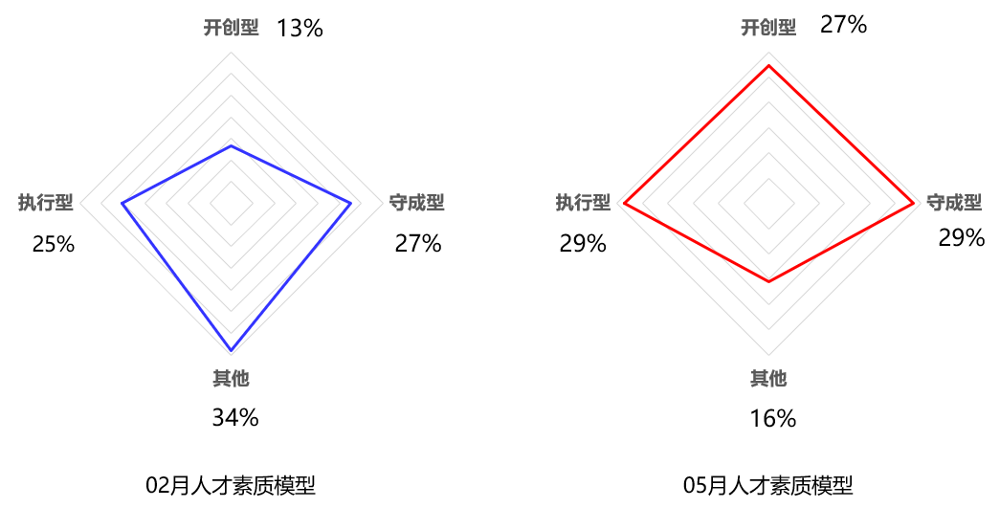

华为从2006年开始在集体面试中就引入了华为领军人物都具备的五项基本素质，主动性、概念思维、影响力、成就导向、坚韧性，每一项人才素质又分为0级、1级别、2级、3级。
然而不同素质对应的级别组合下来，就将公司人才分成了，执行型、守成型和开创型。
公司十多年的传统业务，也有着非常多的老员工，不少十年以上工龄的老员工，在公司早已没有那么多积极奋斗的想法，外加过去公司的业务主要采取被动性销售，也使得公司内大多数人才，都是被动主义。
为了人才换血，公司半年时间，花费超百万。解聘了一批业绩排名靠后，效率不高的老员工。因为考虑到疫情对就业的影响，离职补偿也都是按照N+2进行。
在新招聘的过程中，更关注开创型人才，也就是主动性、概念思维、影响力、成就导向、坚韧性都达到二级以上。我们认为也只有这样的人，才能保证未来的业绩能超出预期。
小半年时间，招聘了较多的优秀人才，一切都向着较好的方向发展。但优秀的人才，并不一定能保证人品就一定好。这次的事情，给我敲响的一个警钟。
外省一家分公司的销售部的H员工，4个月时间，顺利度过试用期，业绩也能排名部门前五，还算是不错。前不久4月份的时候，部门提成制度做了变更，他不太愿意接受。部门负责人，为了让他接受，签订了薪酬调整协议，给了H员工1个月的缓冲期，既从6月1日开始，核算新考勤制度。
很快进入到6月，第一周他就开始不干活，在团队内开始怂恿其他同事，打听其其他人员薪酬。给他的上级制造各种麻烦，所有的沟通都是带脏字的。
上级是销售负责人，管理经验不太足，又很怕麻烦。对于这种情况，肯定直接让他走人。而解除劳动合同，又需要进行经济补偿，就这样，合同解除了，钱也赔偿了。销售负责人，难道忘了自己的年度奖金和部门利润挂钩的？经济补偿也会算到部门的利润中，还会占比较大部分…那么自己年度奖金不要了么？
H员工就是运用的影响力在中的综合策略，用复杂的策略影响他人，通过微妙的手段来使别人接受自己的观点… 只可惜，没用到该用的地方。
比能力更重要的是人品，职场上做的每一个选择，都是给自己未来铺路，最终有人拥有一手好牌，却最终却打的稀烂。
如果我是这个部门的负责人，我肯定不会就这么给经济补偿。首先要做的是，暂停客户资源的供给，平均月入1万+，现在就只剩底薪了，自己又能熬多久呢？
如果我是H员工，未来得到相应的补偿金，其实也不需要这么极端，找部门负责人，好好沟通下自己的想法和需求，部门负责人不答应也没关系，还可以找公司人事部门继续沟通。从未来的工作效率、投入产出比、对团队未来一个阶段的影响，来进行谈判，可能会得到同样的结果，还一定是好聚好散。
2020年02月-05月，人员换血+学习发展+人才发展，最终还没能达成组织的高速发展，努力还得继续。

一个季度的时间，各部门进行两次人才盘点，数据显而易见。2020年05月红色的人才模式，还没到我想要的正等腰三角形…继续加油~！